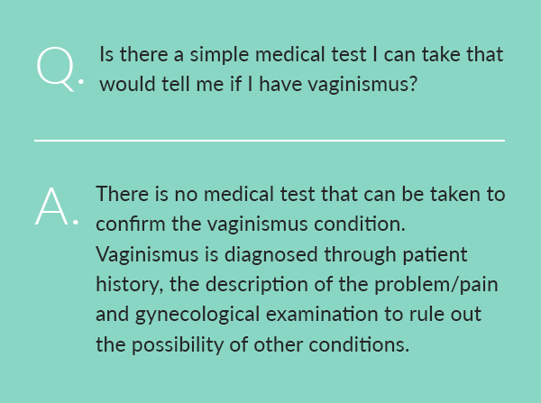

Vaginismus Symptoms
Depending on the intensity, vaginismus symptoms range from minor burning sensations with tightness to total closure of the vaginal opening with impossible penetration.
What is Vaginismus?
Vaginismus is vaginal tightness causing discomfort, burning, pain, penetration problems, or complete inability to have intercourse.
The vaginal tightness results from the involuntary tightening of the pelvic floor, especially the pubococcygeus (PC) muscle group, although the woman may not be aware that this is the cause of her penetration or pain difficulties.
Vaginismus is a common cause of ongoing sexual pain and is also the primary female cause of sexless (unconsummated) marriages. Sexual pain can affect women in all stages of life; even women who have had years of comfortable sex. While temporarily experiencing discomfort during sexual intercourse is not unusual, ongoing problems should be diagnosed and treated.
Common Symptoms:
- Burning or stinging with tightness during sex
- Difficult or impossible penetration, entry pain, uncomfortable insertion of penis
- Unconsummated marriage
- Ongoing sexual discomfort or pain following childbirth, yeast/urinary infections, STDs, IC, hysterectomy, cancer and surgeries, rape, menopause, or other issues
- Ongoing sexual pain of unknown origin, with no apparent cause
- Difficulty inserting tampons or undergoing a pelvic/gynecological exam
- Spasms in other body muscle groups (legs, lower back, etc.) and/or halted breathing during attempts at intercourse
- Avoidance of sex due to pain and/or failure
Did you know?
Vaginismus is a common cause of ongoing sexual pain and is also the primary female cause of sexless (unconsummated) marriages. Sexual pain can affect women in all stages of life; even women who have had years of comfortable sex. While temporarily experiencing discomfort during sexual intercourse is not unusual, ongoing problems should be diagnosed and treated.
Examples of the Effects of Vaginismus
Did you know?
With vaginismus, the mind and body have developed a conditioned response against penetration. The body has learned to expect or anticipate pain upon penetration, so that the powerful PC muscle “flinches” or contracts to protect against the potential of intercourse pain. This can be equated to automatically blinking one’s eyes and wincing when an object is hurled toward us. It is not something a woman thinks about doing—it just happens (see Causes).
Variations in the Experience of Vaginismus
Vaginismus can be triggered in both younger and older women, in those with no sexual experience and those with years of experience. Not all women experience vaginismus the same way, and the extensiveness of vaginismus varies:
- Some women are unable to insert anything at all.
- Some women are able to insert a tampon and complete a gynecological exam, yet are unable to insert a penis.
- Others are able to partially insert a penis, although the process is very painful.
- Some are able to fully insert a penis, but tightness and discomfort interrupt the normal progression from arousal through to orgasm and bring pain instead.
- Some women are able to tolerate years of uncomfortable intercourse with gradually increasing pain and discomfort that eventually interrupts the sexual experience.
- Women may also experience years of intermittent difficulty with entry or movement and have to constantly be on their guard to control and relax their pelvic area when it suddenly ‘acts up’.
Symptoms Severity Range
Vaginismus has a wide range of manifestations, from impossible penetration, to intercourse with discomfort, pain or burning, all resulting from involuntary pelvic tightness. When a woman has never been able to have pain-free sexual intercourse due to penetration difficulties, it is generally classified as primary vaginismus. When a woman develops the vaginismus condition after having previously enjoyed problem-free sex, it is generally classified as secondary vaginismus. Depending upon the classification, there may be some minor differences in the way in which vaginismus is treated.
![Level 1, Minor Discomfort: Minor discomfort or burning with tightness is experienced with vaginal entry or thrusting but may not diminish; Level 2, Burning and Tightness: More significant burning and tightness is experienced with vaginal entry or thrusting and tends to persist; Level 3, Involuntary Tightness: Involuntary tightness of the vaginal muscles makes entry and movement difficult; Level 4, Significant Pain: Partner is unable to penetrate due to tightly closed vaginal opening. Significant pain results if entry is forced.](../img/symptoms/severity-index-en.jpg)
Primary Vaginismus
When a woman has never at any time been able to have pain-free intercourse due to vaginismus tightness, her condition is known as primary vaginismus.
Primary vaginismus refers to the experience of vaginismus with first-time intercourse attempts. Typically, primary vaginismus will be discovered when a woman attempts to have sex for the very first time. The spouse/partner is unable to achieve penetration and it is like he just bumps into a “wall” where there should be the opening to the vagina. Entry is impossible or insertion or gynecological exams. The PC muscles constrict and tighten the vaginal opening making it uncomfortable or in many cases virtually impossible to have entry.
Primary vaginismus is the common cause of sexless, unconsummated marriages.
When tightened, attempts to insert anything into the vagina produce pain or discomfort. Some women also experience related spasms in other body muscle groups or even halted breathing. Generally, when the attempt to put something in the vagina has ended, the muscles relax and return to normal. For this reason, medical examinations often fail to reveal any apparent problems unless the tightness occurs and is noted during the pelvic exam.
Secondary Vaginismus
Secondary vaginismus sexual pain can affect women in all stages of life, even women who have had many years of pain-free intercourse.
Secondary vaginismus refers to the experience of tightness pain or penetration difficulties later in life, after previously being able to have normal, pain-free intercourse. It typically follows or is triggered by temporary pelvic pain or other related problems. It can be triggered by medical conditions, traumatic events, relationship issues, surgery, life-changes (e.g. menopause), or for no apparent reason (see Causes for more examples). Secondary vaginismus is the common culprit where there is continued, ongoing sexual pain or penetration tightness where there had been no problem before. Most commonly, secondary vaginismus strikes women experiencing temporary pelvic pain problems such as urinary or yeast infections, pain from delivering babies, menopause, or surgery.
The initial pain problems are addressed medically, healed, and/or managed, yet women continue to experience ongoing sexual pain or penetration difficulties due to vaginismus. While the initial temporary pain was experienced, their bodies developed a conditioned response resulting in ongoing, involuntary vaginal tightness with attempts at intercourse.
Left untreated, vaginismus often worsens because the experience of ongoing sexual pain further increases the duration and intensity of the involuntary PC muscle contraction.
The severity of secondary vaginismus may escalate so that sex or even penetration is no longer possible without great difficulty. Some women will also experience difficulty with gynecological exams or tampon insertion. Vaginismus can also impede a woman’s ability to experience orgasm during intercourse, as any sudden pangs of pain will abruptly terminate the arousal buildup toward orgasm.
Vaginismus is Involuntary—Not Intentional
It is important to note that vaginismus is not triggered deliberately or intentionally by women. It happens involuntarily without their intentional control and often without any awareness on their part. Vaginismus has a variety of causes, often in response to a combination of physical or emotional factors. The mystery of the problem can be very frustrating and distressing for both women and their partners.
Despite the fact that vaginismus is involuntary and can strike any woman, many women feel intense shame from being unable to have intercourse and keep their pain private, feeling uncomfortable sharing their secret with anyone.
Unconsummated Marriages & Impossible Penetration
Vaginismus is by far the most common cause of unconsummated marriages
Couples often describe their attempts at intercourse as there being a “wall” where the vaginal opening should be. It is baffling to some women as to how this condition originated in them if they had no prior sexual contact or pelvic problems. Intercourse is impossible and painful insertion attempts reinforce the vaginismus response. The conditioned reflex continues to happen every time there is potential for vaginal penetration.
The muscles act rebelliously, refusing to allow entry even though the woman may truly want to consummate and receive her spouse vaginally. Bodies do not start out as skilled reactors to sexual stimulus. Successful intercourse is learned through experience and interaction.
The nervous system and musculature discover and remember what feels good, works, and what isn’t comfortable. Normally, the transition to intercourse becomes more pleasurable after the first few experiences.
This is extremely frustrating. For the aroused man, it is like running into a brick wall. For the woman, it is like her body is no longer under her control.
Sex is an activity involving many complex conditioned responses.
The mind and body allow entry and learn to anticipate intercourse positively. Healthy messages result and they generate arousal in anticipation of intercourse. In a woman with primary vaginismus, the mind and body never get the chance to be trained through positive intercourse experiences.
The process of learning how to have successful intercourse is cut short when the vaginal muscles spasm as a protective device against pain. With the absence of any direct conscious control on the woman’s part, nerves controlling the vaginal muscles react to the anticipation of intercourse as a call to tightly constrict, brace, protect, and guard against the onset of potential penetration pain.
